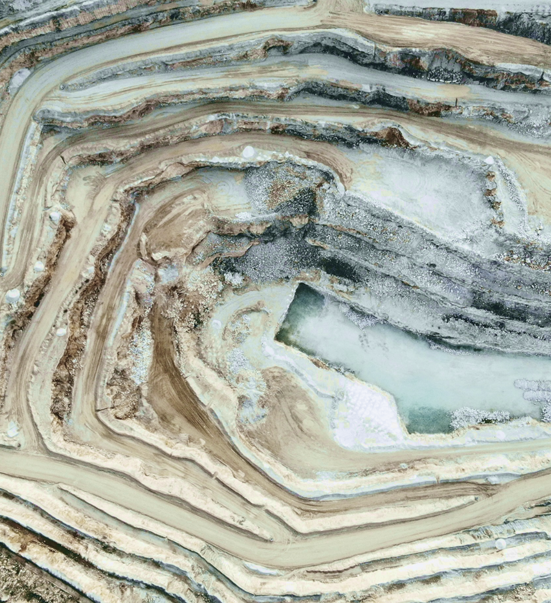

90%+
OVERALL METAL RECOVERY
99.5%+
LITHIUM CARBONATE PURITY
~€4M
CAPITAL RAISED TO DATE
The opportunity
Unlocking value in the electrification transition.
Europe needs reliable supplies of lithium, nickel and cobalt for batteries and other strategic industries. Nordic Salt Cycle develops and operates modular molten-salt recovery plants, co-located with feedstock suppliers.
By processing materials close to their source, the model avoids costly feedstock transport and makes recovery viable at a smaller scale than conventional battery recycling technologies Electrification increases demand for critical materials. NSC focuses on recovering valuable resources from complex material streams that would otherwise be difficult to process.

95+%
PURITY OF NICKEL-COBALT PRODUCT
The circular model
One platform. Multiple waste streams.
Nordic Salt Cycle’s molten-salt technology has been developed primarily for battery recycling, with demonstrated potential to recover critical materials from other complex industrial waste streams.
Bankability indicators
From laboratory results to repeatable industrial modules
Can Nordic Salt Cycle turn successful technical trials into reliable industrial operations, competitive cost per tonne and repeatable modular plants?
Prove the Technology at
Industrial Scale
Scale Through Modular
Integration
Prove Competitive Unit
Economics

"In the commodity world, the cheapest, most straightforward, and most scalable technology wins."